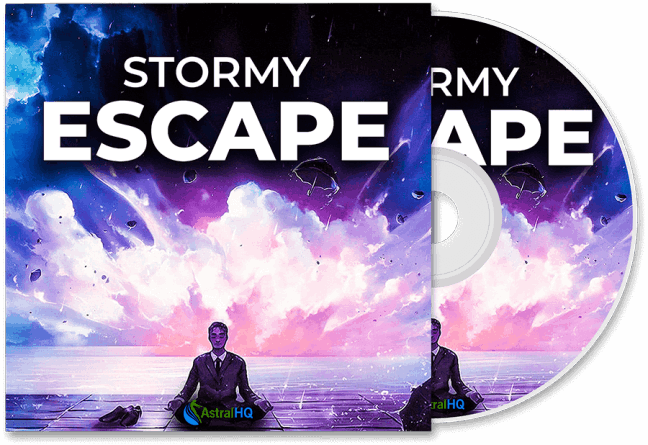
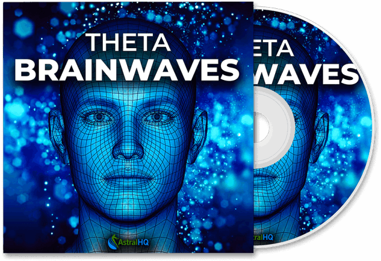
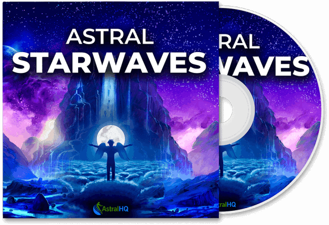
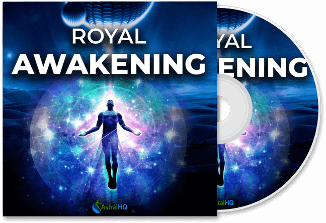

Website Builder SoftwareShifting Vibrations is an empowering self-transformation system that draws on ancient Egyptian frequency principles to elevate every area of your life. This innovative program guides you into shifting your vibrational state, helping you welcome more abundance, happiness, and personal growth with ease.
At its core, Shifting Vibrations focuses on activating the pineal gland, commonly known as the third eye. By awakening this energetic center, the program encourages heightened awareness, stronger intuition, and a deeper feeling of internal harmony. Through carefully calibrated ancient frequencies, Shifting Vibrations aligns your mental, emotional, and spiritual energies—creating the ideal foundation for lasting prosperity, clarity, and emotional wellness.
Regular Price: $197
“Just 20 minutes of listening before bedtime puts me into the most restful sleep I’ve ever experienced. These frequencies feel like they go straight into my subconscious, and I wake up genuinely refreshed and joyful. It’s now a permanent part of my nightly routine, and I can’t wait to see how much more transformation unfolds. This program is truly remarkable!”
“These tracks have elevated my meditation practice to an entirely new level and supercharged my creativity. The binaural tones are soft, soothing, and instantly help me slip into a deep state of focus. My subconscious responds so positively—I feel more inspired, centered, and creatively aligned every single day. I’ll be listening to these for years!”
“I’ve tried countless audio programs over the years, but nothing has even come close to this. The frequencies feel real and incredibly powerful, amplifying my meditation, manifestation sessions, and astral experiences like nothing else. I’ve seen profound spiritual breakthroughs and rapid inner growth. These tracks are truly exceptional!”
Shifting Vibrations is a profound self-transformation program that blends ancient Egyptian wisdom with modern energetic techniques to help you raise your vibration and unlock your inner power. Its purpose is to guide you toward a life filled with abundance, joy, clarity, and personal fulfillment.
At its core, the program uses carefully tuned sound frequencies combined with pineal gland (third eye) activation. By awakening this powerful energy center, Shifting Vibrations enhances intuition, deepens spiritual awareness, and strengthens your alignment with universal energy—creating the ideal conditions for manifesting abundance and positive life changes.
This immersive program includes frequency-infused audio sessions, enlightening training materials, and practical tools for emotional healing, mental clarity, and spiritual growth. As you follow the process, you’ll gradually release limiting beliefs, reconnect with your inner guidance, and align more fully with your highest potential.
By harmonizing ancient knowledge with modern practices, Shifting Vibrations offers a transformative journey for anyone ready to access their true essence and step confidently into a life of purpose, prosperity, and inner freedom.
Immerse yourself in a deeply soothing audio journey crafted with THETA binaural beats—perfect for astral projection and profound relaxation.
This track blends comforting rainfall, soft ocean waves, and atmospheric tones to:
Maintain your brainwaves in the ideal THETA state
Enhance Out of Body Experiences (OBE)
Improve sleep quality
Boost mental clarity and emotional calmness

Harness the transformative power of pure theta frequencies.
Essential for deep meditation and astral travel, this track helps you:
Access your subconscious mind
Enter deep meditative states quickly
Strengthen visualization and intuitive abilities
Lay the perfect foundation for successful astral projection
Ideal for beginners and advanced practitioners alike.

This premium audio track guides you effortlessly into astral states with:
THETA binaural beats
Gentle volume waves
Immersive ambient soundscapes
Perfect for:
Lucid dreaming
Astral travel
Energy alignment
Deep spiritual meditation
A must-have tool for anyone seeking consistent out-of-body experiences.

A calming, meditative frequency track combining ambient music with subtle binaural beats.
Designed to help you:
Enter deep relaxation within minutes
Enhance visualization and manifestation practices
Support waking astral projection
Align your energy with higher intentions
Perfect for evening wind-down sessions or midday spiritual resets.
This powerful binaural beats track is crafted for third eye activation and heightened spiritual awareness. It helps you:
Strengthen intuition
Access higher consciousness
Amplify inner clarity
Enhance daily meditation sessions
Ideal for morning practices—start your day aligned, centered, and spiritually awakened.

✔ Enhances Spiritual Connection – Aligns your energy with higher consciousness and universal flow.
✔ Activates the Pineal Gland – Stimulates the third eye for deeper intuition and spiritual awareness.
✔ Promotes Deep Relaxation – Binaural beats help reduce stress and guide you into calm, meditative states.
✔ Boosts Manifestation Abilities – Reprograms the subconscious mind to attract abundance and success.
✔ Improves Mental Clarity & Focus – Enhances cognitive sharpness, intuition, and decision-making abilities.
✔ Aids Astral Projection & Meditation – Supports lucid dreaming and facilitates out-of-body experiences.
✔ Includes Multiple Free Bonuses – Additional audio tracks and guides for deeper transformation.
✔ Accessible & Beginner-Friendly – No experience required; simply listen and follow the guidance.
✔ One-Time Payment – Lifetime access with no subscriptions or recurring fees.
✖ Results Vary Individually – Effectiveness depends on personal mindset, belief, and consistency.
✖ Requires Commitment – Long-term benefits require regular listening and practice.
✖ Not an Instant Solution – Spiritual and subconscious transformation takes time and patience.
✖ Digital-Only Program – No physical materials; requires an internet connection for downloads.
✖ May Not Suit Everyone – Best for those open to spiritual growth, energy work, and frequency-based practices.
Shifting Vibrations comes with an iron-clad 60-Day TRIPLE Money-Back Guarantee, giving you complete confidence and total peace of mind.
Here’s Our Promise to You:
🔹 Listen to the tracks daily for 60 days.
🔹 If you don’t manifest at least 10–50 times the cost of the program, you’ll receive a full refund—no questions asked.
We stand firmly behind the transformative power of Shifting Vibrations. This guarantee ensures that you can explore the program fully, experience its energetic shifts, and awaken your potential 100% risk-free.
Your transformation is our priority—and your results are protected.
Each audio track has been thoroughly tested and refined multiple times to ensure maximum effectiveness. Participant feedback plays a key role in enhancing every track. Even with added ambient elements, the core frequencies remain intact and powerful, consistently delivering deep transformation and noticeable personal growth.
Absolutely! Manifestation becomes significantly easier when your vibration is elevated. The higher your frequency, the faster and more effortlessly you attract wealth, success, opportunities, and abundance. All six tracks are specifically crafted to raise your energetic vibration, making the manifestation process smooth and natural.
Yes—this is the primary purpose of the program. Whether you’re meditating, practicing lucid dreaming, exploring astral projection, or simply looking to elevate your energy, these frequencies help align you with abundance. As your vibration rises, positive changes flow into your life more quickly and effortlessly.
Absolutely. Your purchase is protected by a 60-day triple money-back guarantee. If you don’t experience the results you expected, simply request a refund—no questions asked. We’re committed to supporting your transformation risk-free.
Some tracks do include binaural beats for deeper relaxation and stronger effects. However, the frequencies are designed to work effectively even without headphones, making them more versatile than standard binaural audio recordings.
Headphones are optional but recommended for the most immersive experience—especially for tracks that include binaural beats. Using them enhances the frequency absorption and allows you to experience the full transformative impact.
Your privacy and security are our top priorities.
All payment information is protected with advanced encryption technology, ensuring your sensitive details remain 100% secure throughout the checkout process.
Plus, your purchase is handled through ClickBank, a globally trusted and reputable payment platform with extensive experience in managing secure online transactions. Your order is in safe hands.
We want you to experience the Shifting Vibrations Program with complete confidence.
That’s why your purchase is backed by a 90-day, 100% money-back guarantee.
✔ Try the program for up to 90 days.
✔ If it doesn’t work for you—or if you’re not completely satisfied — you can request a full refund with zero hassle and zero questions asked.
Your investment is entirely risk-free, giving you the freedom to explore Shifting Vibrations with total peace of mind.
Website Builder Software